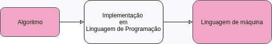

Alguns algoritmos não podem ser executados por um computador. Pode ser porque o computador não tenha recursos para executá-los (trocar um pneu), seja porque eles são indecidíveis.
Algoritmos são uma sequência de passos para se chegar a um determinado objetivo e não precisam necessariamente que um computador os execute. Um algoritmo computacional é ,então, uma sequência de instruções que podem ser executadas por um computador e que manipulam e geram dados.
Para que um computador possa executar um algoritmo computacional, é necessário que uma implementação deste algoritmo seja feita em uma linguagem de programação que o computador "conheça" e depois transformado em linguagem de máquina para poder ser executado.
Alguns algoritmos não podem ser executados por um computador. Pode ser porque o computador não tenha recursos para executá-los (trocar um pneu), seja porque eles são indecidíveis.
Para que sejam manipulados por computadores, os dados devem estar em um formato adequado e devem obedecer a um conjunto de restrições.
Por isso os dados possuem tipos:
Numérico – guarda números inteiros ou reais;
Literal – guarda caracteres (texto);
Lógico – guarda valores lógicos (verdadeiro ou falso), também chamados de booleanos, em homenagem ao matemático George Boole.
Dados numéricos são apenas os números como conhecemos e são divididos em 2 grupos: os inteiros e os reais
Dados do tipo inteiro são números, positivos ou negativos, que não possuem parte fracionária, pertencentes ao conjunto dos inteiros.
Exemplo: 36; 0; -18;
Dados do tipo real são aqueles que podem possuir compnentes decimais ou fracionários, e também podem ser positivos ou negativos, pertencentes ao conjunto dos racionais
Exemplo: 36.01; 0.0; -18.5; 42;
Dados literais são sequências de caracteres que podem conter letras, dígitos e/ou símbolos especiais. Também são chamados de alfanumérico, cadeia de caracteres ou, ainda, string. Observe que também é válida uma string vazia!
Usualmente são representados nos algoritmos pela coleção de caracteres delimitada por aspas (“ ”). Em algumas linguagens de programação, existe a diferenciação entre um caractere único (‘A’) e um conjunto de caracteres (“Olá Mundo”).
Exemplo: "Quem?"; "APC-2018-2"; "Olá Mundo!";
São caracterizados como tipos lógicos (ou booleanos), os dados que podem assumir apenas os valores verdadeiro ou falso (mas nunca os dois ao mesmo tempo).
Se definimos que Verdadeiro = 1, e Falso = 0, então um dado booleano pode ser representado em apenas 1 bit.
Os conceitos básicos necessários para escrever um algoritmo computacional são:
Constantes são valores que não se modificam ao longo da execução do programa.
Uma constante criada pelo usuário deve ter um nome (nome da variável), um tipo (inteiro, real, etc) e um valor (10, 10.5, "ola"). Nenhum desses três elementos pode ser modificado pelo programa.
const float PI = 3.141522; const char NOME_ALUNO[] = "Marcos";
Por convenção, é utilizado apenas letras maiúsculas e underscore (" _ ") no nome de constantes.
Constantes criadas pelo usuário tipicamente ocupam uma região de memória cujo conteúdo nunca muda.
Outro ponto são os valores literais no código, pois também são considerados constantes.
x = 2 * x; // O 2 é uma constante
printf("Olá Mundo!\n"); // A string Olá mundo! é uma constante
Uma variável é uma região de memória. Isto é, ao declarar uma variável, o programador está reservando memória da máquina para ser usada por seu programa.
Para que não precisemos nos referir ao endereço de memória de uma variável diretamente, as linguagens de programação nos permitem atribuir-lhe um nome.
Toda variável deve também ter um tipo declarado.
| Declaração | Memória | Conteúdo |
|---|---|---|
| int a = 10; | 0x00000000 | 10 |
| int b; | 0x00000004 | ?? |
| string name = "Stark"; | 0x00000008 | 'S' 't' 'a' 'r' |
| 0x0000000C | 'k' ? ? ? | |
| bool achou; | 0x00000010 | ?? |
| float pi = 3.15; | 0x00000014 | 3.15 |
| ... | ... | ... |
o conteúdo, i.e., o valor armazenado em uma variável, pode mudar ao longo da execução, mas seu nome e seu tipo são constantes!
Palavras reservadas, são identificadores que têm um significado especial para o compilador, por isso não podem ser utilizadas pelo programador para nomear variáveis e constantes.
Por exemplo, na Linguagem ANSI C, algumas palavras reservadas são:
return union const float short unsigned continue for signed void default goto sizeof volatile do if static while auto double int struct break else long switch case enum register typedef char extern
Ao definirmos o nome de uma variável temos que seguir algumas regras básicas:
=> NOMES VÁLIDOS
nota salario X
valor total w
valor_min valor_max n1
=> NOMES INVÁLIDOS
5B (não começa com letra)
X+Y (Possui caractere inválido)
while (Palavra reservada)
Variáveis geralmente são declaradas no início do programa. Elas precisam ter um nome e um tipo. Os tipos básicos são:
O tipo da variável vem primeiro, seguido pelo nome. Você pode declarar mais de uma variável de um mesmo tipo em uma única linha, separando o nome delas por vírgula (o tipo aparece só uma vez).
string nome; int qtd; float valor, valor_total; bool go;
Para realizar cálculos, podemos escrever expressões aritméticas. Nessas expressões, podem aparecer apenas variáveis e constantes numéricas e os seguintes operadores:
| Prioridade | Operador | Operação | Tipo | Exemplo |
|---|---|---|---|---|
| Maior ↓ Menor |
( ) | Altera prioridade | Unário | 5 * (1 + 2) = 15 |
| -, + | Troca, mantém o sinal |
Unário | -(-1) = 1 +(-5) = 5 |
|
| ^ | Exponenciação | Binário | 2^3 = 8 | |
| *, / | Multiplicação, Divisão |
Binário | 1.0 / 2 = 0.5 1.0 * 2 = 2.0 |
|
| - , + | Subtração, Soma | Binário | 1 + 1 = 2 |
Quando precisamos verificar condições, utilizamos expressões relacionais e lógicas.
Expressões relacionais comparam valores, e retornam verdadeiro ou falso:
| Prioridade | Operador | Operações | Tipo | Exemplo |
|---|---|---|---|---|
| Maior ↓ Menor |
< , <=, >, >= |
menor, menor ou igual maior, maior ou igual |
binário | 0 < 0 : F 1 <= 2 : V -1 > -5 : V |
| =, != | igual, diferente | binário | 1 = 1 : V 0 != 0 : F |
Expressões lógicas têm operandos com o valor verdadeiro ou falso e geram um resultado também verdadeiro ou falso, de acordo com os operadores:
| Prioridade | Operador | Operações | Tipo |
|---|---|---|---|
| Maior ↓ Menor |
NÃO | não lógico (negação) |
binário |
| E |
e lógico (conjunção) |
binário | |
| OU |
ou lógico (disjunção) |
binário |
| A |
B | NÃO A | NÃO B |
A E B | A OU B |
|---|---|---|---|---|---|
| V | V | F | F | V | V |
| V | F | F | V | F | V |
| F | V | V | F | F | V |
| F | F | V | V | F | F |